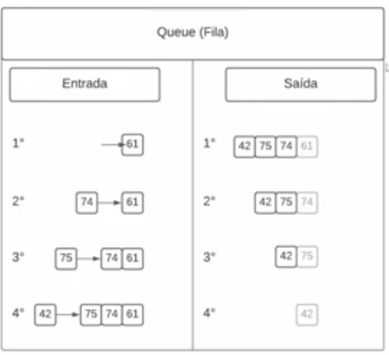
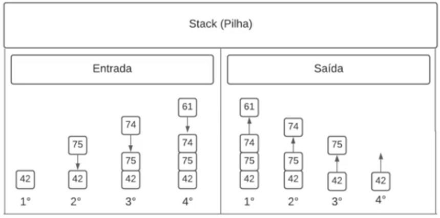
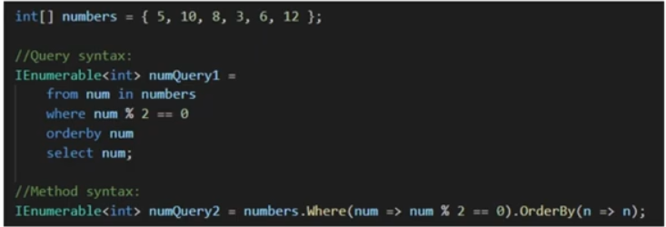

Professor Leonardo Buta
Documentação sobre coleções da Microsoft.Array é um conjunto de dados que armazena valores do mesmo tipo, com um tamnho fixo.
Há algumas formas de declarar um array
Um array de inteiros que só pode ter 4 elementos
Automataticamente o array que não tem tamanho, pode ter seu limite indicado pelo número de valores que foram passados na inicialização
Array com 4 linhas e 2 colunas
Não pode modificar o tamanho do array depois que ele foi declarado.
Para percorrer um array nós podemos usar o comando for ou foreach
No vscode é possível fazer o debug de um código, para isso dentro do programa que queremos debugar apertamos a tecla f5, após ter escolhido os breakpoints. Se necessário, temos que fazer algumas alterações no launch.json que abre na pasta .vscode, irmã da pasta raiz do projeto.
Ao tentar passar um tipo que não é o certo no array haverá um erro, assim como se tentarmos ler ou modificar um índice que não existe, ou seja, que seja maior que o tamanho do array.
Para percorrer um array muldidimensional nós temos que passar um for dentro do outro. O primeiro percorre as linhas e o segundo as colunas. Temos que executar o método GetLength(a) para determinar o alcance do for, sendo a = 0 para linha e a = 1 para colunas.
Existem diversos algoritmos de ordenação, como podemos ver neste artigo da wikipédia, sendo que cada um tem sua complexidade e melhor situação de uso.
O Bubble sort é usado para pequenos arrays. É um algoritimo de comparação. Ele vai fazendo trocas entre os pares imediatos de itens até estabelecer a última posição não ordenada.
O site VisuAlgo possui explicações exemplificadas sobre alguns algoritmos de ordenação.
O número de ciclos de comparações será igual ao número de itens do array. Ou seja, se o array tem 5 itens, nós vamos fazer 5 vezes a comparação entre cada um dos itens.
O professor usou o seguinte código para imprimir o array de uma forma mais palatável:
var linha = string.Join(", ", array);
System.Console.WriteLine(linha);
Quero ver o que acontece quando damos apenas um System.Console.WriteLine(array)
É uma classe nativa do System que oferece diversos métodos e atributos de um array. Como por exemplo a ordenação.
Para utilizá-la, temos que estar usando o namespace System.
Um dos métodos é o Array.Sort(array_que_queremos_trabalhar).
Interessante notar que ao dar o comando System.Console.WriteLine("Este código {0}", variável), o {0} será substituído pelo valor da variável na saída do texto no console.
Uma coleção do c# parecida com array, só que de alto nível, ou seja, sem termos que nos preocupar com algumas nuances de um Array.
Uma coleção genérica tem tamanhos dinâmicos.
A lista e outros tipos de coleção genérica fica no espaço System.Collections.Generic.
O primeiro item de uma lista também é o 0.
Para declarar uma lista nós temos que dar um ""using System.Collections.Generic"" e no corpo do código o comando ""List<tipo_lista> nome_lista = new List<tipo_lista>()"". Os tipos da lista podem ser string, double, int, etc.
Detalhados no README.html da prática a aula.
Implementam regras para sua ordem de acesso e manipulação de seus elementos. Duas dessas coleções são a Queue (fila) e Stack (pilha), aquela obedece à ordem FIFO (First In, First Out), esta à LIFO (Last In, First Out).
Assim como a List, para declarar uma Queue nós temos que dar um ""using System.Collections.Generic"" e no corpo do código o comando ""Queue<tipo_queue> nome_queue = new Queue<tipo_queue>()"". Os tipos da queue podem ser string, double, int, etc.
Adiciona um elemento no fim da fila
Remove e retorna o objeto atual no começo da fila.
Retorna o objeto do começo da fila
Retorna o número de elementos que está na fila.
Usamos while e dentro dele os comandos de Dequeue e Peek.
Assim como a List, para declarar uma Stack nós temos que dar um ""using System.Collections.Generic"" e no corpo do código o comando ""Stack<tipo_stack> nome_stack = new Stack<tipo_stack>()"". Os tipos da stack podem ser string, double, int, etc.
Adiciona um elemento no topo (fim) da fila
Remove e retorna o objeto do topo (fim) da fila.
Retorna o objeto do topo (fim) da fila
Retorna o número de elementos que está na pilha.
Usamos while e dentro dele os comandos de Pop e Peek.
É uma coleção para armazenar onde se armazena uma chave e um valor. O dicionário armazena a chave em hash.
Não é permitido ter chaves repetidas.
Dictionary<tipo_chave,tipo_valor> nome_dicionario = new
Dictionary<tipo_chave,tipo_valor>();
Podemos inicializar com valores, provavelmente igual nas outras coleções
Podemos usar tambem o método nome_dicionario.Add(chave,valor)
foreach(KeyValuePair<tipo_chave,tipo_valor> item in nome_dicionario)
{
System.Console.WriteLine($"chave: {item.Key}, valor: {item.Value}");
}
O código do foreach acima indica que o item é um conjunto chave-valor, sendo que podemos acessar cada um deles a partir do atributo respectivo (Key para chave e Value para valor) passado à referência do par (no caso item).
nome_dicionario[chave]
nome_dicionario[chave] = valor
nome_dicionario.Remove(chave)
Obviamente tanto o valor quanto a chave são removidos.
Quando tentamos acessar de maneira simples uma chave que não existe no dictionary o código quebra. Para evitar isso e fazer acessos de maneira segura usamos o método TryGetValue()
if(nome_dicionario.TryGetValue(chave_procurada, out tipo_valor variavel_valor)
{
System.Console.WriteLine(variavel_valor);
}else
{
System.Console.WriteLine("Chave não encontrada");
}
O método TryGetValue retorna um booleano e em caso de true ele vai permitir manipular a variavel_valor, que vai armazenar o valor que está associado à chave procurada e encontrada no dicionário.
Language-Integrated Query (consulta integrada à linguagem). É uma maneira de utilizar sintaxe de consulta padronizada para coleções de objetos.
Pode se integrar a qualquer tipo de coleção.
Para utilizá-la nós temos que dar using System.Linq
Nos exemplos da imagem os retornos seram armazenados em listas de nomes numQuery1 e numQuery2. O orderby da segundo exemplo está errado, o certo seria ""num"" ao invés de ""n"".
nome_colecao.Sum()
Retorna a soma dos elementos da coleção.
nome_colecao.Distinct().ToColeção()
Retorna uma coleção contendo os mesmo valores que a original, porém sem repetição de valores, caso haja na original.
O ToColeção deve ser substituído por ToArray, ToList, ou o que mais fizer sentido para a aplicação.